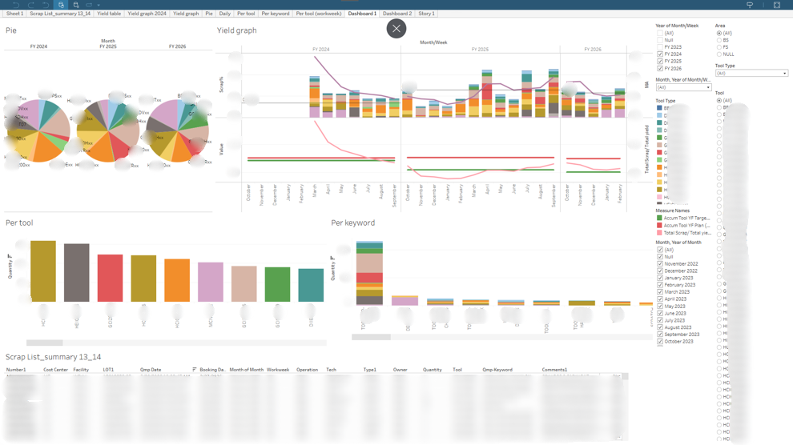

📊 Dashboard Screenshot
(yield-scrap-performance.png)
(yield-scrap-performance.png)
1
Yield & Scrap Performance Dashboard
Built a management-facing yield reporting dashboard to track year-over-year performance and quickly pinpoint loss drivers. Scrap is layered by tool and keyword to enable fast Pareto analysis, while key indicators (moving average, yield plan, yield target, and scrap year-end % based on scrap lots vs. yield output) provide clear performance context and gap-to-target visibility.